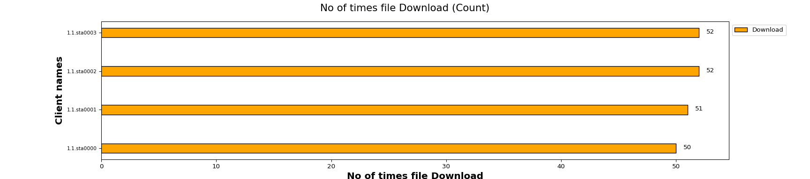
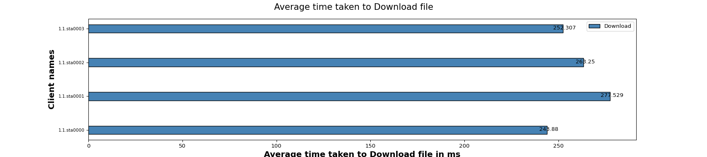

| Test Setup Information |
|
||||||||||||||||||||||||||||||||
This FTP Test is used to Verify that N clients connected on Specified band and can simultaneously download some amount of file from FTP server and measuring the time taken by client to Download the file.
The below graph represents number of times a file Download for each client(WiFi) traffic. X- axis shows “No of times file Download” and Y-axis shows Client names.
The below graph represents average time taken to Download for each client (WiFi) traffic. X- axis shows “Average time taken to Download a file ” and Y-axis shows Client names.
The below table will provide information of minimum, maximum and the average time taken by clients to download a file in seconds
| Minimum | Maximum | Average |
|---|---|---|
| 0.1 | 0.6 | 0.3 |
| Clients | MAC | Channel | SSID | Mode | No of times File downloaded | Time Taken to Download file (ms) | Bytes-rd (Mega Bytes) |
|---|---|---|---|---|---|---|---|
| 1.1.sta0000 | 04:f0:21:89:13:f4 | 149 | NETGEAR_2G_Open | 802.11an-AC 80 2x2 | 50 | 243.880 | 100.0116 |
| 1.1.sta0001 | 04:f0:21:89:a5:f4 | 149 | NETGEAR_2G_Open | 802.11an-AC 80 2x2 | 51 | 277.529 | 102.0000 |
| 1.1.sta0002 | 04:f0:21:89:3f:f4 | 149 | NETGEAR_2G_Open | 802.11an-AC 80 2x2 | 52 | 263.250 | 104.0000 |
| 1.1.sta0003 | 04:f0:21:89:a0:f4 | 149 | NETGEAR_2G_Open | 802.11an-AC 80 2x2 | 52 | 252.307 | 104.0000 |